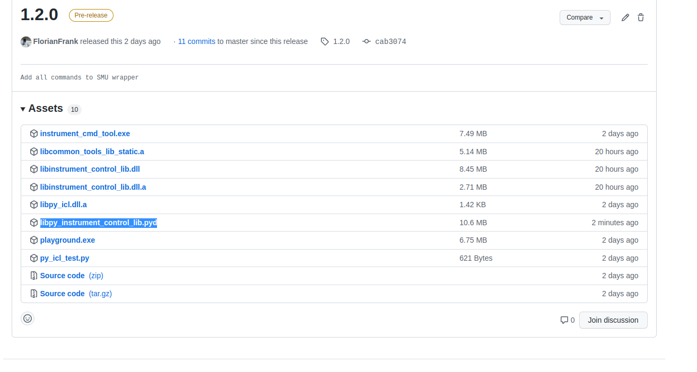

Framework to control Oscilloscopes, SMUs, Function Generators and DC Powersupplies via Ethernet.
Instrument Control Lib
This repository contains the code to configure oscilloscopes, signal generators, DC Power-supplies and other measurement devices.
It provides following functionality:
Establishing a network connection and identifying the different types of devices
Execution of VISA commands on the devices. E.g. setting the voltage on a DC power-supply, Setting voltage limits on SMUs or to gather the current data of an oscilloscope
CSV export function to directly store the output of measure devices in an *.csv file.
Environment to set up test cases, configured by an XML file.
Platform independent implementation (tested on Windows, MAC OS and Ubuntu)
The files are copied into the **/usr/bin, /usr/lib/,** and **/usr/include** folders and can be linked and included in any program.
2.2.2 On Windows systems
Run the graphical installer.
2.2.3 On MAC OS systems
Run the graphical installer.
Supported Commands per device
SPD1305X DC Power Supply
Function
Parameters
Description
Value Range
setCurrent()
channel, current
Sets the current of the DC power-supply.
See manual.
getCurrent()
channel
Get the currently adjusted current of a certain channel.
See manual.
setVoltage()
channel, voltage
Sets the voltage on the DC power-supply.
See manual
getVoltage()
channel
Get the currently adjusted voltage of a certain channel.
See manual
Keysight 33500B Waveform Generator
Function
Parameters
Description
Value Range
run()
-
Start the acquisition on the instrument.
-
stop()
-
Stop the acquisition on the instrument.
-
single()
-
Wait for the first signal which is triggered and stop the measurement.
-
autoScale()
-
The oscilloscope tries to find the best vertical channel, timebase and trigger setting for the current experiment.
-
setTimeRange()
timeRange
Sets the full-cale horizontal time in seconds for the main window.
10x current time-per-devision setting
setChannelOffset()
channel, offset, unit
Set the offset of a channel in volts or milli volts.
When amplitude is below 400 mV the offset is limited to 500 mV
setChannelScale()
channel, scale
Sets the vertical scale or units per division of a specified channel.
See manual
setChannelRange()
channel, range
Defines the full-scale vertical axis on the selected channel
8 mV - 40 V
getWaveFormData()
data
Return the currently captured waveform, which is visualized on the oscilloscopes screen. The data is formated in IEEE 488.2 arbitrary block data format.
-
getRealData()
double **result
Captures data from the oscilloscope and transforms the data from binary array to a double array.
-
digitize()
-
Specialized run command. Captures waveforms according to the settings of the :ACQuire format. (Can only be executed with :TIMbased:MODE being MAIN or WINDow)
-
getSystemSetup()
-
Outputs the current oscilloscope setup as string.
-
setDisplayMode()
mode
Sets the mode of the oscilloscope either to normal mode, time based mode, XY or roll mode.
Turn on the channel (A or B) on the function generator.
-
turnOff()
channel
Turn off the channel (A or B) on the function generator.
-
setFrequency()
channel, frequency
Set a certain frequency on a channel of the function generator.
See manual
setAmplitude()
channel, amplitude
Set a certain amplitude on a channel of the function generator.
See manual
setOffset()
channel, offset
Set a voltage offset on a certain channel of the function generator.
See manual
setPhase()
channel, phase
Adjust the phase on a certain function generator channel.
See manual
setFunction()
funcType
Set the function currently used (allowed: sinus, square, ramp, negative ramp, triangle, noise, pseudo random bit stream, arbitrary)
See manual
display()
text
Display text on display of function generator.
displayConnection()
-
-
-
Examples
Connect to devices
{c++}
#include "kst33500.h" // include right device header file
int main() {
// provide a IP address, some devices may need an extra port parameter
KST33500 k("xx.xx.xx.xx");
k.Connect();
}
Development
In this lab, we use socket to send SCPI commands to devices in order control them remotely.
Check the documents in Docs for SCPI commands.
Basically, you can run any commands using Exec commands. For saving time, we wrapped some frequently used commands. But we cannot wrap all the commands.
Here is an instruction for wrapping a command. Let's say you want to wrap a command of Keysight waveform generator:
{c++}
FUNCtion <function>
which set a <function> waveform.
Go to kst33500.h file and add a function signature called "function".
{c++}
int function(string fun);
Go to skt33500.cpp file and add the implementation of this function. What you need to do is making an SCPI command and invoke the Exec function.
{c++}
int KST33500::function(string fun) {
string msg = "FUNCtion " + fun;
Exec(msg);
return 0;
}
That's it. After that, you can use like:
{c++}
k.function("SIN");
Tutorial Python interface
Download the most recent release from the repository
Go to releases on the right side and click on the link
There you see different tags e.g. 1.2.0
Click on downloads
Download libpy_instrument_control_lib.pyd

Go to folder where libpy_instrument_control_lib.pyd is stored
Open the python console
Make sure the libpy_instrument_control_lib is in the folder
Open the library as module
Create a SMU object with an IP and an timeout for the socket
There exists a function which transforms the error codes into Strings. Some error codes are not used in the library because these are derived from the abstraction library. This function will be implemented in python soon!
# No error occurred
NO_ERROR
# Invalid arguments passed to a function, e.g. passing a nullptr.
PIL_INVALID_ARGUMENT
# An error occured and an errno error code was set.
# Internal error message can be requested by the error handle
ERRNO
# Error when performing an operation on a closed interface.
INTERFACE_CLOSED
# Error when baudrate cannot be set. E.g. when the approximation function has a higher deviation then 2 %.
INVALID_BAUDRATE
# Error insufficient resources.
INSUFFICIENT_RESOURCES
# Error, insufficient permissions to perform a certain operation.
INSUFFICIENT_PERMISSIONS
# Error, when deadlock is detected in a multithreaded application.
DEADLOCK_DETECTED
# Error while joining a thread.
THREAD_NOT_JOINABLE
# Error performing an operation on on a not initialized thread.
 1.8.17
1.8.17